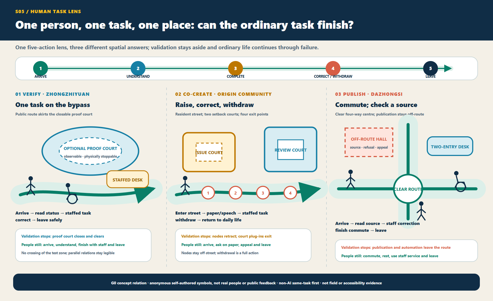

01
30 seconds: one person, one task, one place

02
One spatial decision: ordinary ground first, proof beside it

03
Three places cannot exchange answers

04
3 minutes: ordinary - verify - fault - recover
![Static four-state storyboard: green ordinary ground stays continuous in all four states; blue verification appears only beside it and within bounds; coral fault isolates verification objects only; recovery restores the ordinary task, staffed service, physical information, and traceable state, not model restart, authorization, approval, or G1. The three prototypes show parallel bypass and side court, one street with two courts and four withdrawals, and a four-way commute cross with an off-route hall and desk.](../assets/figures/four-state-journey.en.png)
Conceptual motion diagram; playback is optional. Its 54 seconds are editorial pacing only, not a real recovery duration; if it is not played, cannot decode, is printed, or reduced motion is preferred, the static storyboard immediately above remains the equally complete answer.
05
Who may let verification continue? No duty is accepted; still NO-GO

06
15 minutes: trace claim, evidence, rights and veto
Geometry and metrics remain frozen. H01-H02 answer duty and scope; H03-H05 answer ordinary baseline, data safety and stop/recovery; H06-H07 answer public parity and independent decision. Any missing item refuses real-world start. Real attachments, acceptances, approvals, field results and independent retests remain zero; the 10/10 synthetic replay is not service accuracy.
Provisional site model11.41 km²
Green ratio12.62%
Public-space ratio1.28%
Task coverage
- Overview map
- Three-level scope
- Key areas
- Land-use zoning
- Mobility
- Blue-green public space
- Architecture
- Renewal projects
- AI scenarios
- Core metrics
- Task coverage
- Self-check status
- Assumptions